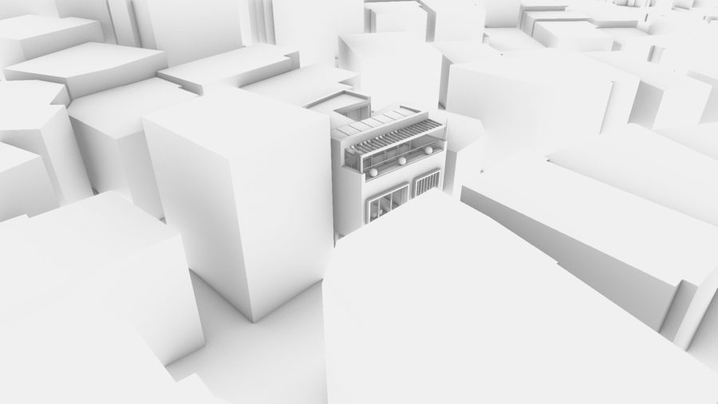
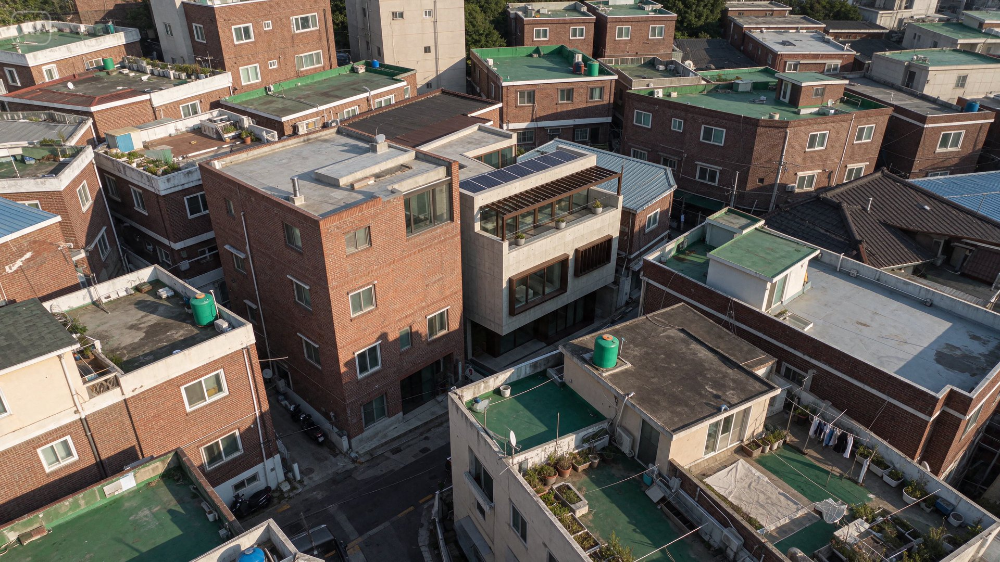

V01 · 조감 — 오후
Turn this white clay massing model aerial view into a photorealistic aerial drone photograph of the Haebangchon hillside neighborhood in Seoul. Keep the exact camera angle, building positions and the new three-storey house in the center exactly as in the reference: light-grey board-formed exposed concrete, dark bronze window frames and vertical louvers, glass third floor with a steel pergola terrace, rooftop solar panels. Surrounding buildings become old red-brick and beige stucco 2-5 storey Korean multi-family houses with rooftop green water tanks, small rooftop gardens, laundry lines, satellite dishes, narrow sloped alleys with parked scooters. Green Namsan hill in the background, clear late-afternoon sunlight with long shadows, realistic, high detail, architectural photography.